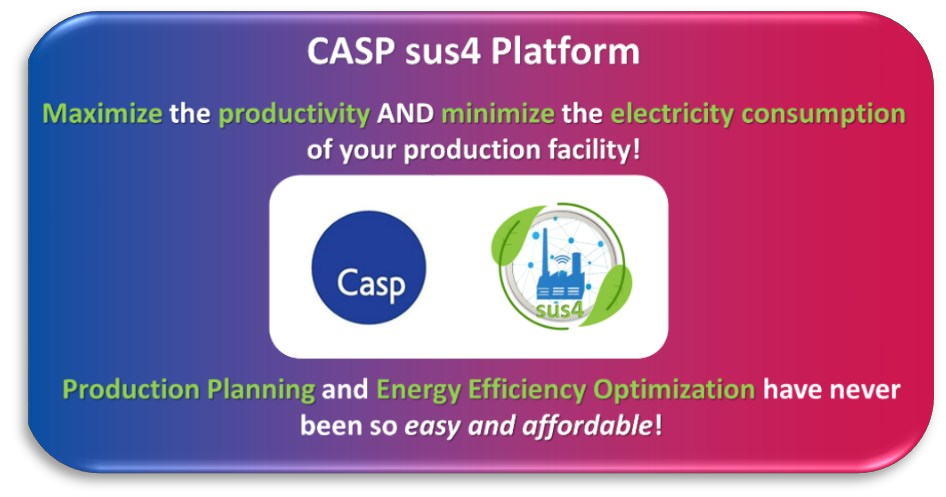
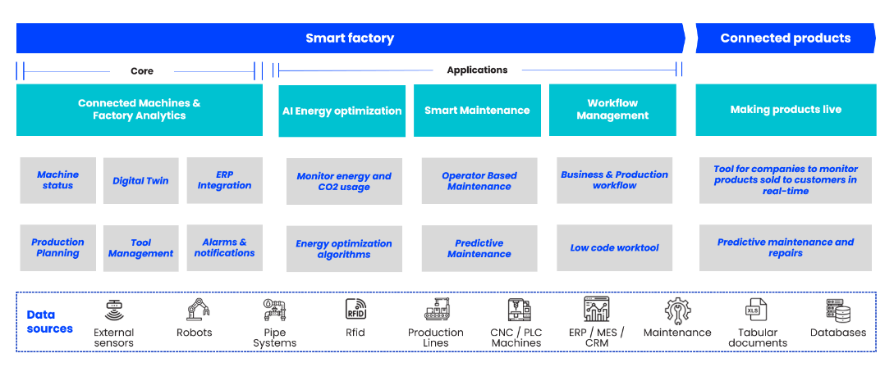

General description
In the fast-evolving landscape of the last decade, energy consumption, particularly in electricity, has shown a consistent upward trend. Looking ahead, the next 10-15 years are poised for even greater escalation. We recognize the critical need for sustainable solutions in energy consumption, and this realization birthed the sus4 project. The implementation of solutions demands high levels of expertise, posing a significant barrier for small and medium-sized manufacturers, who may not have the capacity to engage specialists.
Our mission in the sus4 project is to bridge this gap, making sustainable energy solutions accessible and applicable for small and medium manufacturers. We're committed to demystifying complexity, bringing practical, implementable solutions to the forefront, and empowering businesses to navigate the changing energy landscape seamlessly.
Purpose
The sus4 project aims at implementing and commercializing a framework and the relevant digital tools for:
- Energy/electricity use optimization.
- Production planning & optimization of factories.
The digital platform products of sus4 have been validated in two use cases in Italy and Lithuania and are/will soon be market-available.
Consortium
Coordinated by the Laboratory for Manufacturing Systems & Automation (LMS)
Contact: Prof. P. Stavropoulos | pstavr@lms.mech.upatras.gr
Dr. P. Foteinopoulos | pfotein@lms.mech.upatras.gr
bikeUp Torino, 24-26 May 2024
The tenth edition of BikeUP‐Electric Bicycle Power Festival took place in Turin, from 24 to 26 May 2024. The major international manufacturers in the eBike sector, bicycle tourism operators (tour operators, APT and ATL, territories) and some brands of two- and four-wheel electric mobility set up their stands in Corso Cairoli, Lungo Po Armando Diaz and the Murazzi. Further details are available on the official website of the event www.bikeup.eu
Industry 4.0 conference - Balttechnika Fair, 15-17 May 2024
On May 15th, the Industry 4.0 Conference took place as part of the Baltechnika fair, offering invaluable insights into the future of manufacturing and digital transformation. Distributing our SUS4 leaflets at the conference and fair allowed us to raise awareness and connect with numerous potential partners and clients, who were keen to learn how SUS4 digital tool for production planning and efficiency.

Hannover Messe, 22-26 April 2024
Rune Stølan, representing the SUS4 project at the Hannover Messe with the upkip platform, reported a positive reception from attendees, particularly larger companies seeking solutions to enhance their manufacturing processes. "The interest was palpable, especially with Chinese companies eager to learn more about how our digital tool can streamline their operations and drive efficiency," he remarked. Notably, there was also interest from global automotive manufacturers, indicating a demand for grid optimization solutions in the market.
A+R Expo, 12-14 April 2024 and Athens Science Festival, 20-24 April 2024
At the A+R Expo, we joined top industry players to present the latest advancements in digitalization for manufacturers. Our SUS4 team had engaging discussions with attendees and demonstrated how our software embraces greener production, simultaneously improving productivity.
We also had the privilege of participating in the Athens Science Festival, an incredible celebration of science, technology, innovation, and art. Over the course of two days, we connected with hundreds of attendees, sharing insights and experiences, while promoting the capabilities of CASP's sus4 product.
Advanced Factories, 18-20 April 2023, Barcelona
- 9 startups from EIT Manufacturing's pipeline shared their innovative solutions onstage to make industry smarter and more sustainable.
- +30 industrial corporations were interested in solutions to optimize processes, increase efficiency, and reduce CO2 emissions.
- +80 meetings were scheduled both onsite and online to foster exchange and learning.
How many PoCs will happen thanks to this initiative? Time will tell! We would like to thank all the participants and to ACCIÓ for making this happen by sharing our main takeaway from today: "CONNECTIONS FOSTER LEARNINGS. LEARNINGS CAN LEAD OPPORTUNITIES" And we, at EIT Manufacturing work every day to make these connections happen!
CASP sus4 Platform
The sus4 platform of CASP is specifically designed for manufacturing organizations seeking to optimize their processes/production lines, reduce lifecycle energy consumption, and enhance their sustainability initiatives.
CASP's sus4 platform is not only a business tool, but also a commitment towards a more sustainable future.
Strengths-Features
- By purchasing the CASP sus4 platform, the customer will be getting a solution that will be exactly fitted to their needs. CASP is committed to offering continuous development and support to the customer for as long as their subscription is active.
- Productivity and Energy Efficiency Optimization.
- Combines scheduling and optimization at the process level.
- Fully customizable, tailored to the exact needs of your production facility.
- Stand-alone and cloud versions to choose from./li>
- Capability to be combined with other online solutions.
- Support and consultancy services included.
- Competitive pricing strategy.
The clients of CASP's sus4 platform are guaranteed to have total benefits in terms of cost reductions (energy saving) and profit increase (increased productivity) of at least 4 times the cost they pay for the platform and potentially up to 50 times the platform's cost: for every Euro spent in CASP's platform → at least 4 Euros back, and potentially more than 50.
UPKIP sus4 Module
Upkip is a real-time manufacturing monitoring solution with advanced analytics capabilities and machine learning-enabled features. It is an Industry 4.0 platform in the cloud built on top of Microsoft Azure, making use of 100+ Azure PaaS services. This ensures high flexibility, scalability and the newest technology provided by the Azure community. Upkip is designed to interoperate with existing infrastructure, CNC machine controllers, PLCs and external sensors to extract, store and analyse data.
The key features related to the UPKIP sus4 module are mostly related to energy mix optimization:
- Revolutionize your energy bill while reducing your environmental footprint.
- Simulation of consumption and energy cost to optimize planning.
- Avoid peak energy charges.
Strengths-Features
- Experienced and well-trained technical team: 10 years of competence and experience in the area.
- The latest and greatest cloud technologies continuously developed by Microsoft are scalable and with a large community, which allows our team to grow and provide business value faster.
- Flexible, configurable, and customizable concept that could fit any niche where data are collected, processed, and analyzed, provided there is access to domain knowledge.
- Low-cost solution with high added value: 30% of the cost from alternative solutions for manufacturing SMEs, while greatly scalable and easier to customize.
- Advanced AI-aided and statistical analysis.
- Augmented reality and 3D visualization for intuitive monitoring and maintenance support.
- Dedicated and Multitenant deployment models provide a balance between security and cost.